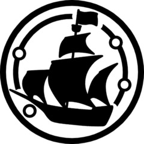

MTF Gamma-4 “Blondebeard’s Crew”
Task Force Mission: Mobile Task Force Gamma-4 is a five-man task force specialized in performing tasks in low to zero-gravity and vacuum environments. Based at Lunar Area-32.

Task Force Mission: Mobile Task Force Gamma-4 is a five-man task force specialized in performing tasks in low to zero-gravity and vacuum environments. Based at Lunar Area-32.